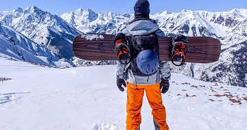

Now as we have got to this far, I am going to let you know what are my main hobbies.

1. Snowboarding/Gym/Swimming/Snorkelling/Tennis/Hiking
I have put all these hobbies together as all of them are related to sports. They have many benefits, it gives you the opportunity to breath fresh air (despite the gym), to have a large amount of adrenaline and not to mention, they help with physical activity, which lowers the stress hormone, cortisol, therefore life can be much better. I do miss snowboarding; I have not done it for a while now. Snorkelling, it is something totally new for me and I look forward to doing it as soon as possible!
2. Motorcycling/exploring
Woo-hoo! On a motorcycle, life means freedom, although it has many risks when committing to this hobby, while doing it you need to be very careful. It helps you travel easier and when you can, faster. If you would ever think of this, don't be a showmanship. Exploring is a pleasure on a motorcycle.
3. Cooking
Yes, cooking can be a hobby, one you do with pleasure and one that helps when your partner does not feel like cooking for the whole family. Whilst doing it I feel relaxed and I can last within the kitchen’s walls for a couple of hours without any problems, I do enjoy tasting different things and to discover new recipes.
4. Photography
This is another new hobby for me, which I started to like once I found myself with the camera and plenty of free time in a nice environment. Let’s think about it, what it could be better to explore some places and to immortalise the moments with some quality pictures, which lasts for a lifetime. Sound!
5. Gaming/Reading/Watching movies
Gaming is the beauty of exploring virtual worlds with friends or alone, discovering stuff and completing tasks. I have been a gamer for a good while now, although I do not do it as often as I used to, but whenever I have time and I do it, I do it with a lot of pleasure, as I do when I read or watch movies. I mostly read and watch psychological movies, action, horror or comedy. I fancy PC and PS4, mostly MMORPG and RPG but shooter or MOBA is not a bad idea either.
6. Listening to music
Lastly, but not least, is this beauty. This is the most relaxing method ever, whenever you are off your way, listen to music. I am sure you already know this because this is the most common hobby, therefore I do not really have to say anything else about it. I listen to Dance, Pop, Soft Rock, DnB, R&B, Hip-Hop etc, just cool stuff.
These being said, I hope, you, the one who reads this, are going to get to know your interests
and discover new hobbies that may help you relax,
improve, focus and strengthen your body and mind. Take care!